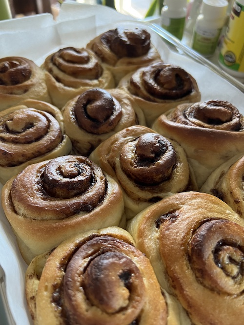

Cinnamon Rolls

Description
These cinnamon rolls are really super soft and fluffy! I've made the filling with olive oil, butter, and canola oil: I actually prefer it with just sugar and cinnamon, which results in a slightly drier bun (but more intensely flavored).
Original recipe from I cook and paint.
Ingredients
Dough
- 360 grams all purpose flour
- 45 grams sugar
- 7 grams instant yeast
- 3 grams salt
- 120 grams whole milk
- 48 grams butter
- 36 grams vegetable oil
- 4 grams vanilla
- 1 egg
- 60 grams water
Filling
62 grams butter (softened)
65 grams brown sugar
8 grams cinnamon
pinch salt
Steps
- For the dough, combine in a large bowl the flour, sugar, instant yeast and salt. Heat milk in a small pot over the stove or in the microwave until quite warm. Add butter and stir until melted. Add vegetable oil and vanilla..
- Cool milk mixture to lukewarm if necessary. You should barely be able to feel it when you stick your finger in it. Make a well in the dry ingredients and add milk mixture along with egg and water. Mix by hand or using stand mixer until the mixture forms a very soft, sticky dough. The dough will be very sticky but do not add more flour. The more you knead, the less sticky it will become. Knead until it feels very smooth, about 6-8 minutes. Cover well with plastic wrap and proof for 1½ - 2 hours or until doubled in bulk.
- While dough is rising, combine the brown sugar and cinnamon in a small bowl for the filling. Once the dough has proofed, roll out into a rectangle that measures 15x10 inches. Use a small amount of flour on your work surface to prevent sticking. Spread the soft butter over entire surface of the dough, then sprinkle on the brown sugar and cinnamon mixture. Starting from long edge closest to you, roll dough as tightly as you can. When you reach the end, pinch the seam very well to seal.
- Using a piece of string, cut the roll into 8-12 buns. Arrange evenly in a buttered parchment lined 14 x 8 inch pan and cover with plastic. Allow to rise in a warm place for another 45-60 minutes or until doubled in size.
- Preheat oven to 375F/190C. Bake rolls for 18-22 minutes or until golden brown and fully cooked in the middles.
- Frosting ingredients and instructions on I cook and paint's website.